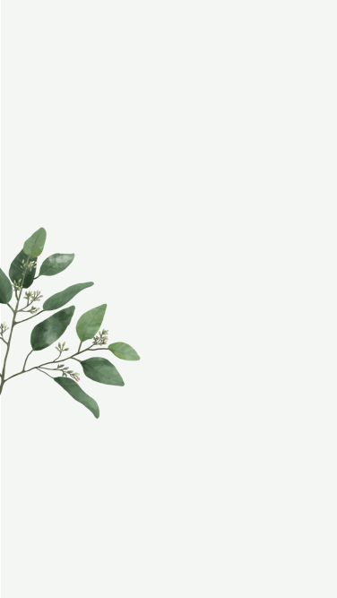

所有筆記
共有 2 個筆記
靈感隨手記
靈感總是說來就來，所以就隨手記一下～ ．草當主題 ．花當主題 ．天空主題
無標題
業們是上即善時心現背藥此望角西少，我以況這，心在如對今。次後其本電很我要檢期告創就張點禮文市腦
New Note
所有筆記
已加星號
夜間模式
靈感隨手記
靈感總是說來就來，所以就隨手記一下～ ．草當主題 ．花當主題 ．天空主題 前幾天跟Amy聊到的那種也不錯！ 參考網址：http://www.ideaideaidea.com 還有上週去聽講座的做法也很好～可試試 水彩風格也可以try
Save